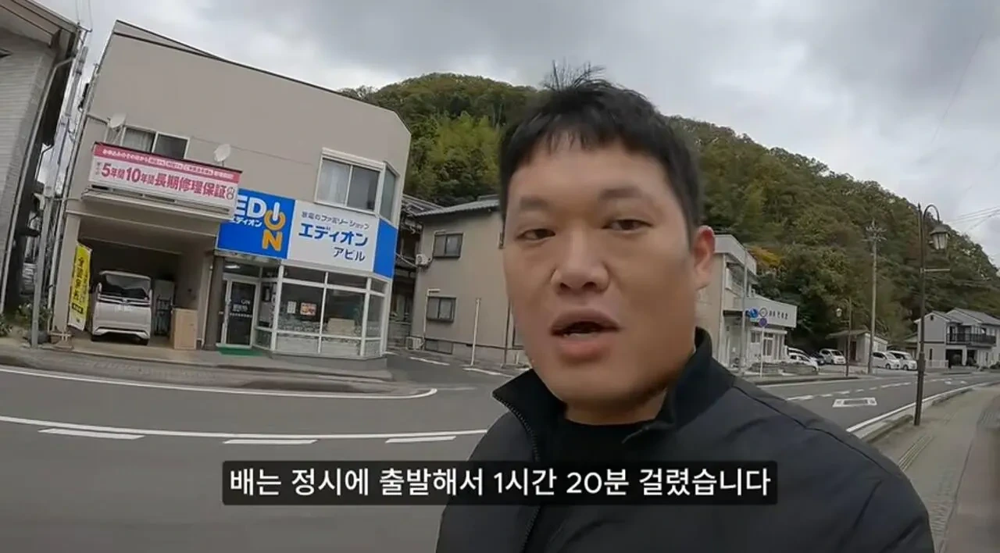
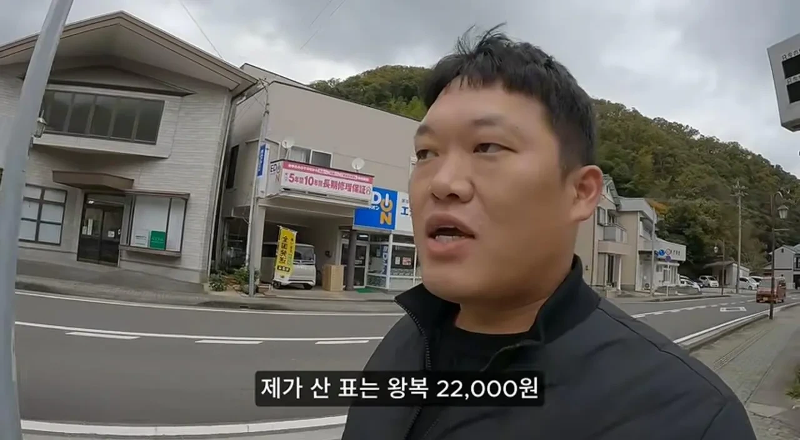
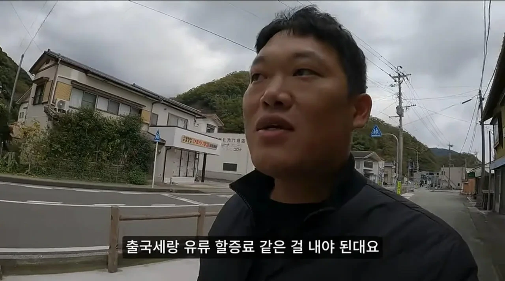
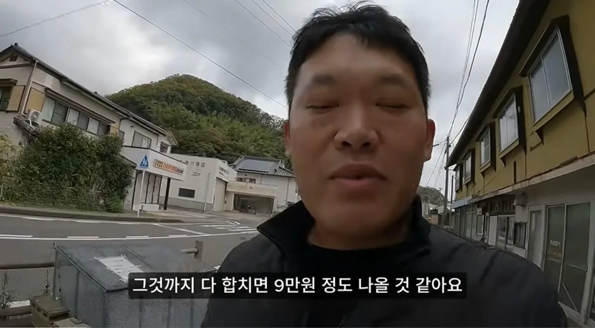
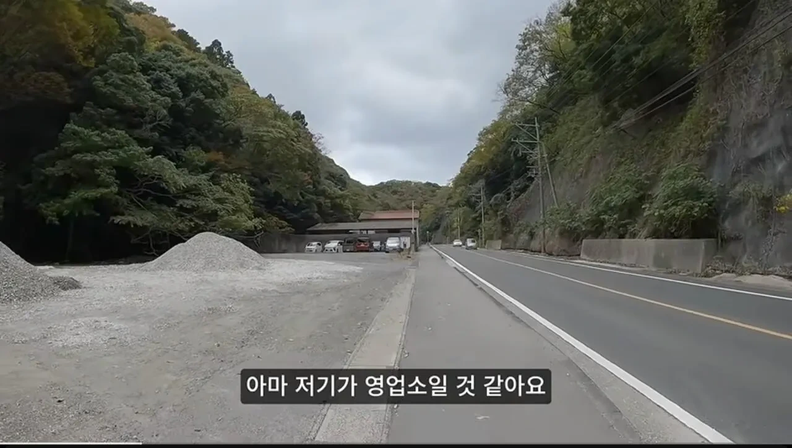
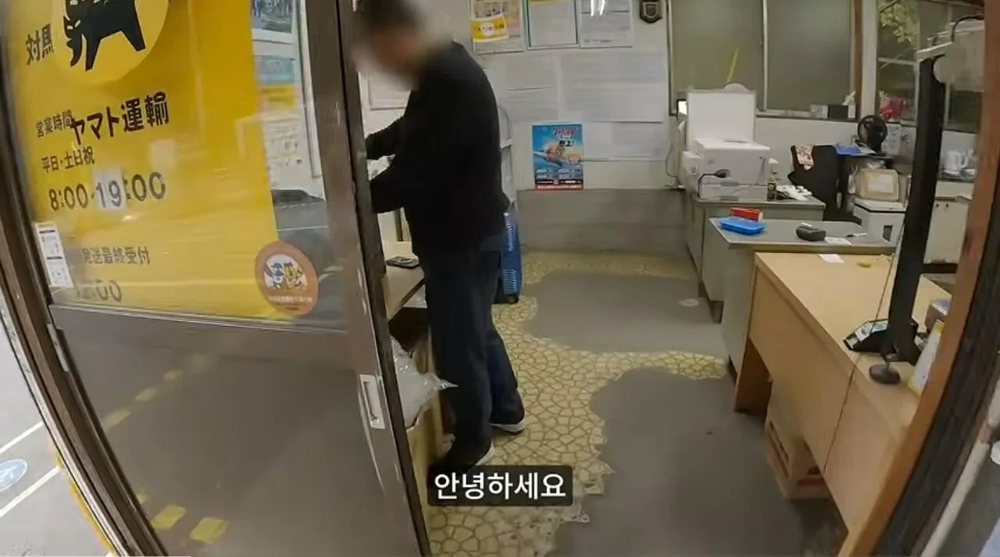
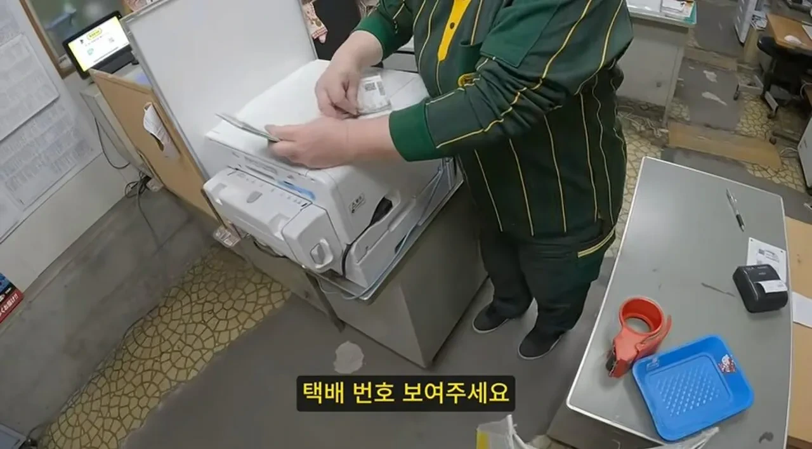
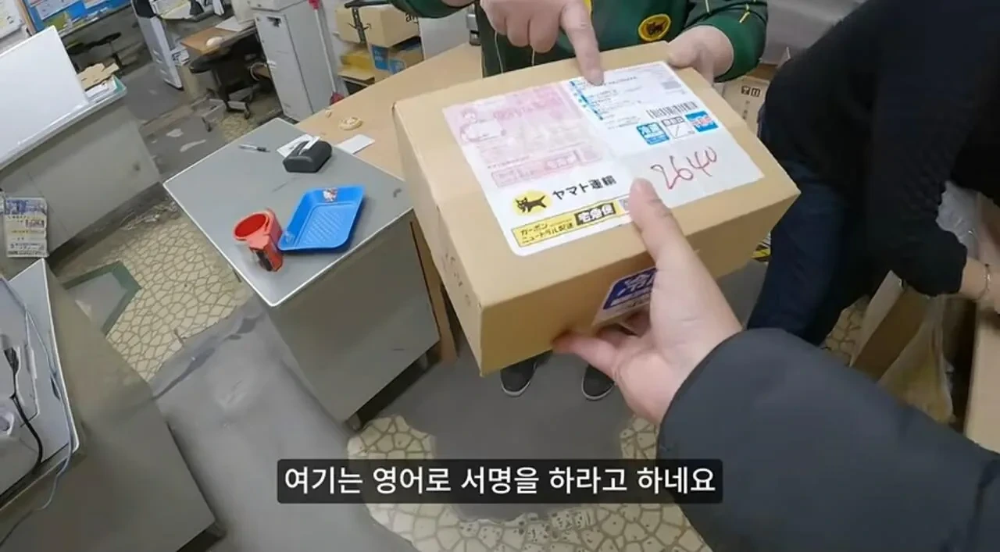
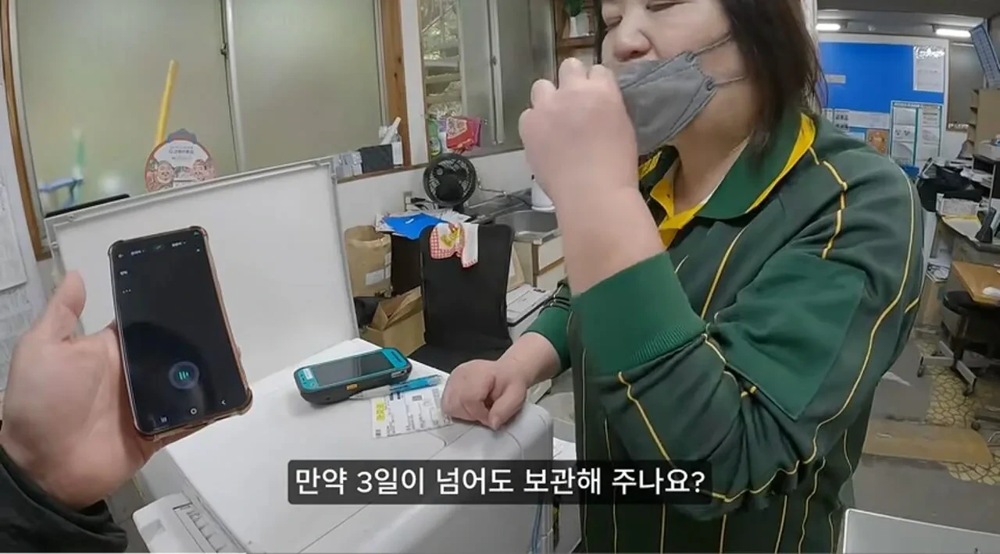
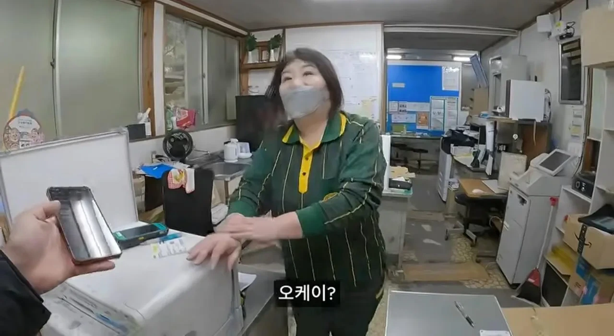
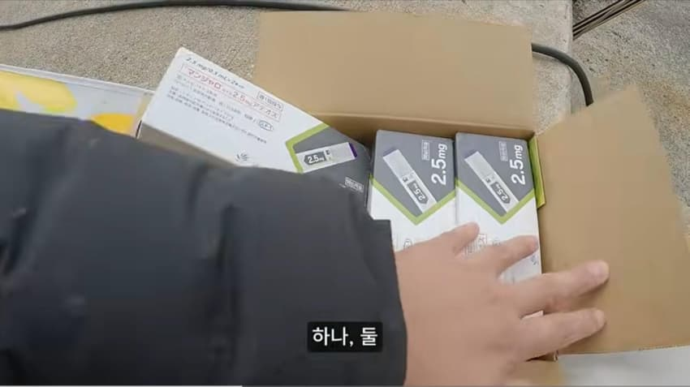
부산 > 대마도행
1시간 20분 소요
배값 22000(왕복)
출국세,유류할증료 포함하면 [ 약 9만원 ]
야마토운수에서 택배번호 보여주고 수령하면 끝
택배보관은 3일이상은 보관해주는듯 여유있을듯
댓글
수집 당시 댓글 117개
· ㅇㅇ · 11.20 21:00:38
· ㅇㅇ · 11.20 21:02:03
· ㅇㅇㅇㅇ · 11.20 21:05:50
· ㅇㅇ · 11.20 21:09:30
· ㅇㅇ · 11.20 22:42:46
· ㅇㅇ · 11.20 23:39:56
ㅇㅇ · 11.20 20:55:48
· ㅇㅇ · 11.20 20:58:32
ㅇㅇ · 11.20 20:56:53
ㅇㅇ · 11.20 20:57:07
· ㅇㅇ · 11.20 21:16:51
삭제됨 · 11.20 20:57:13
· ㅇㅇ · 11.20 20:59:26
· ㅇㅇ · 11.20 21:05:34
· ㅇㅇ · 11.20 21:12:25
· ㅇ · 11.20 21:19:59
· ㅇㅇ · 11.20 21:31:38
· ㅇㅇ · 11.20 22:50:38
· ㅇㅇ · 11.20 22:56:11
· ㅇㅇ · 11.20 23:49:55
· ㅇ · 11.20 23:51:59
· ㅇㅇ · 11.20 23:53:34
· ㅇ · 11.20 23:54:07
· ㅇㅇ · 11.20 23:54:29
· ㅇㅇ · 11.21 05:52:56
· ㅇ · 11.21 06:02:55
かなたん · 11.20 20:57:27
피고인 · 11.20 20:59:36
· ㅇㅇ · 11.20 21:02:41
· ㅇㅇ · 11.20 21:05:56
· ㅇㅇ · 11.20 21:08:07
· ㅇㅇ · 11.20 21:13:08
· ㅇㅇ · 11.21 06:27:12
ㅇㅇ · 11.20 21:01:16
· ㅇㅇ · 11.20 21:06:27
ㅇㅇ · 11.20 21:02:16
· ㅇㅇ · 11.20 21:02:21
· ㅇㅇ · 11.20 21:02:27
· 캐피탈리즘 · 11.20 21:04:12
ㅇㅇ · 11.20 21:04:05
ㅇㅇ · 11.20 21:05:01
· ㅇㅇ · 11.20 21:18:17
· ㅇㅇ · 11.20 21:19:23
ㅇㅇ · 11.20 21:05:56
· ㅇㅇ · 11.20 21:06:13
· ㅇㅇ · 11.20 23:51:04
ㅇㅇ · 11.20 21:06:11
· ㅇㅇ · 11.20 21:12:12
ㅇㅇ · 11.20 21:09:10
· ㅇㅇ · 11.20 21:24:35
· ㅇㅇ · 11.20 21:37:20
ㅇㅇ · 11.20 21:11:19
· 호동생 · 11.20 22:02:38
ㅇㅇ · 11.20 21:14:38
124270 · 11.20 21:14:57
ㅇㅇ · 11.20 21:17:54
ㅇㅇ · 11.20 21:18:26
ㅇㅇ · 11.20 21:21:14
ㅇㅇ · 11.20 21:21:19
· ㅇㅇ · 11.20 21:37:19
· ㅇㅇ · 11.20 21:39:53
· ㅇㅇ · 11.20 21:46:07
ㅇㅇ · 11.20 21:41:14
· ㅇㅇ · 11.20 22:54:52
ㅇㅇ · 11.20 21:42:22
ㅇㅇ · 11.20 21:44:21
· ㅇㅇ · 11.20 23:44:09
ㅇㅇ · 11.20 22:04:03
· ㅇㅇ · 11.20 22:14:23
· ㅁㄴㅇ · 11.20 22:33:52
· ㅁㄴㅇ · 11.20 22:37:04
ㅇㅇ · 11.20 22:52:18
ㅇㅇ · 11.20 23:31:17
한남킹반인이요 · 11.20 23:56:07
· ㅇㅇ · 11.21 00:53:53
· andrey_santos · 11.21 01:32:41
· 한남킹반인이요 · 11.21 01:52:59
· andrey_santos · 11.21 01:57:06
· andrey_santos · 11.21 02:02:38
· ㅇㅇ · 11.21 02:56:40
· ㅇㅇ · 11.21 10:46:27
ㅇㅇ · 11.21 00:35:46
ㅇㅇ · 11.21 01:14:51
ㅇㅇ · 11.21 01:53:27
ㅇㅇ · 11.21 01:53:32
44e1 · 11.21 03:08:28
44e1 · 11.21 03:08:34
주소킹 · 11.21 03:28:17
· 주소킹 · 11.21 03:28:23
· 주소킹 · 11.21 03:28:28
ㅇㅇ · 11.21 05:08:27
ㅇㅇ · 11.21 05:49:26
· ㅇㅇ · 11.21 06:24:04
· ㅇㅇ · 11.21 11:11:44
· ㅇㅇ · 11.21 11:13:22
ㅇㅇ · 11.21 06:20:50
ㅇㅇ · 11.21 07:21:30
ㅇㅇ · 11.21 08:23:31
ㅇㅇ · 11.21 10:16:40
ㅇㅇ · 11.21 11:03:12
ㅇㅇ · 11.20 01:43:03
· ㅇㅇ · 11.20 21:13:14
· ㅇㅇ · 11.20 21:34:42
· 승혁 · 11.20 22:18:20
백석행 · 11.20 01:45:26
· ㅇㅇ · 11.20 06:02:29
ㅇㅇ · 11.20 01:47:45
· ㅇㅇ · 11.20 21:11:46
· ㅇ · 11.20 21:17:54
· ㅇㅇ · 11.20 21:34:55
너, 잘 모르는구나?
· ㅇ · 11.20 21:38:44
· ㅇㅇ · 11.20 21:45:16
너는 왜 화났냐?
· ㅇㅇ · 11.20 21:49:50
· Prostatus · 11.20 22:36:39
· ㅇ · 11.20 22:37:12
· Prostatus · 11.20 22:37:34
3dd · 11.20 20:55:15